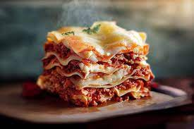

LASAGNA

Lasagna a la italiana
PASO A PASO AQUÍ
INGREDIENTS
- Paso 1. Prepara el relleno. Coloca un poco de aceite de oliva en una sartén al fuego y añade la carne picada con sal y pimienta al gusto.
Ve moviendo y separando la carne con el fuego bastante vivo. Añade la cebolla, picada a cuchillo,
cuando la carne esté ya dorada. Sigue removiendo y, tras 4 o 5 minutos, cuando la cebolla ya se empiece a cocinar,
añade el vino blanco. Pon el fuego moderado y, cuando el alcohol haya reducido, añade la salsa de tomate.
- Paso 2. Remueve bien y deja que reduzca un poco el tomate. Cuando consigas la consistencia que quieres para tu relleno, retira la sartén del fuego.
- Paso 3.Introduce la lasaña de carne y queso, tapada con papel de aluminio, en el horno sin precalentar.